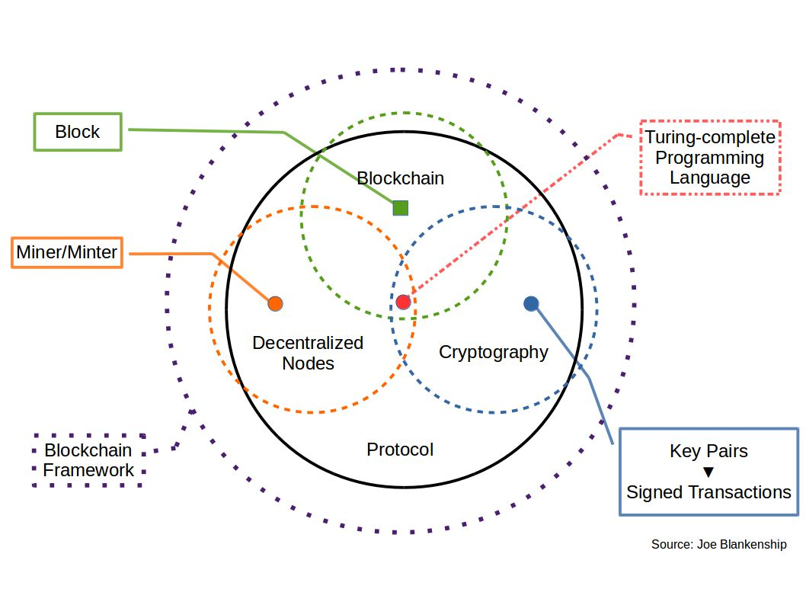
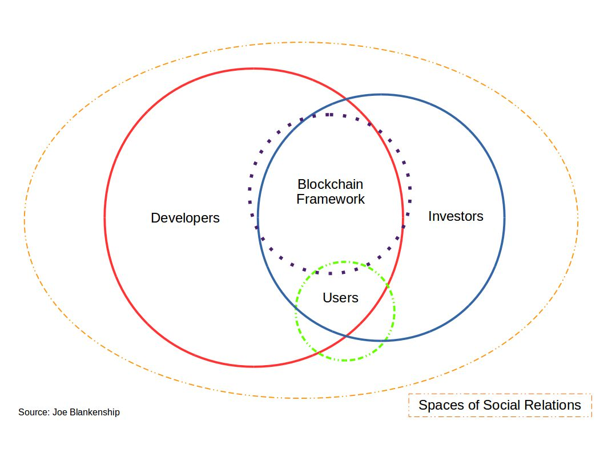
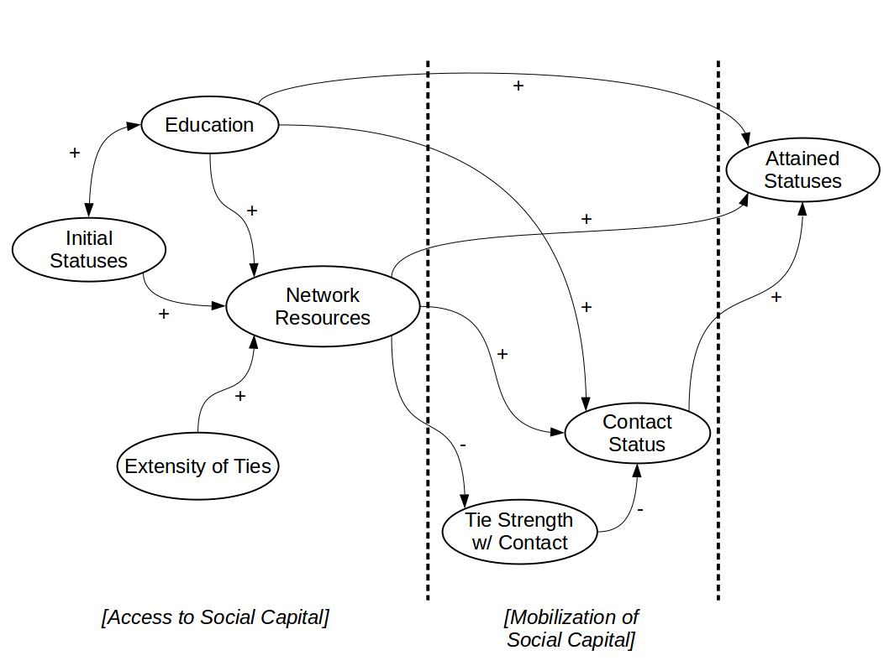

This blog is based on a paper I drafted in the spring of this year. My goal was to draw out the social dimensions of cryptocurrencies and blockchains. In recent months, this has become part of my PhD project. Though far from complete, this is my first look at the social processes surrounding illicit activity as facilitated in part by the cryptocurrency Bitcoin.
Introduction
In was mid-afternoon in San Francisco when Ross Ulbricht took a seat in the Glen Park Library (Bearman et al., 2015). Even though this was not his typical café working spot, he quickly opened his laptop and began to feverishly administer his website. Like many public libraries, there were several people around including many homeless patrons. Early into his work, an argument had broken out between two people right behind him. When Ross turned around in reaction to this incident, he was immediately tackled and handcuffed while another person took his laptop away, quickly accessing his system for information.
Ross Ulbricht was perceived by his friends and family as a hard working currency trader and entrepreneur, but online he had a very different persona: Dread Pirate Roberts. That day in the library, Ulbricht was arrested by the FBI for running what was at the time the largest online illicit materials market in the world: Silk Road. For almost two years, the FBI and other agencies had been working to expose the leadership and identities of people using and facilitating this digital marketplace of which Dread Pirate Roberts was their primary objective (Bearman et al., 2015). The proceeding shutdown of the first Silk Road marketplace was largely the result of examining the activity of servers, personal computers, and people themselves. However, it was an understanding and leveraging of the social network surrounding Dread Pirate Roberts that led to the arrest of Ulbricht and others major actors within the Silk Road marketplace.
This use of social networks to identify and capture criminals is common practice in modern police work (Burcher & Whelan, 2015; Tayebi & Uwe, 2016). However, as the spaces of online communication and data exchange become more complex, the methods and practices of digital forensics become more difficult to access with their applicational ramifications difficult to comprehend. This is perhaps why the activity found within the Bitcoin blockchain has only been seen as a record of exchange rather than as an artifact of the social relations of the Silk Road marketplace itself.
This study seeks to examine the aspects of social capital surrounding Dread Pirate Roberts through the following research question:
- In examination of the Bitcoin blockchain and known addresses used by Dread Pirate Roberts, can actor and group level benefits be established within the context of Dread Pirate Robert’s Silk Road transactions between 2011 and late 2013?
This research question will be expanded on through these sub-questions:
- How can social capital of particular relations primarily assessed via Bitcoin addresses connected to Dread Pirate Roberts be validated by known identities as found through the BitcoinWhosWho API and the Blockchain.info API?
- What does the use of Bitcoin as the standard unit of currency for Silk Road tell us about the forms of social capital found within the social relations of Dread Pirate Roberts?
This study concludes with an assessment of Bitcoin as a byproduct of a particular array of social relations that guide its economic applications.
Bitcoin and Blockchains
A key factor in the case against Ross Ulbricht and Silk Road was the use of heavy encryption and identity protection via the Onion Router (TOR) network and the cryptocurrency Bitcoin (Jardine, 2015). Despite the nature of the Bitcoin blockchain as public and transparent, one can not simply look at the record of Bitcoin transactions to determine who purchased what from whom. This aspect of the Bitcoin cryptocurrency system is what made its application within the Silk Road marketplace optimal between 2011 and late 2013. In order to better understand the importance of the Bitcoin blockchain for the purpose of this study, we will examine the brief history of Bitcoin and the mechanisms that drive blockchain technologies.
History of Bitcoin
In late 2008, a software developer using the name Satoshi Nakamoto proposed a distributed, peer-to-peer (P2P) currency system named Bitcoin (Nakamoto, 2008). By early 2009, the Bitcoin network was active and producing currency for the community (using their computers to run and support the burgeoning network). This new system was rooted in existing technologies such as cryptographically secured e-money of the 1980s (e.g., DigiCash) (Peters et al., 2015), P2P data sharing networks of the late 1970s (e.g., BitTorrent), and more ubiquitous publicly available cryptography of the early 1990s (e.g., PGP). By 2010, Mt. Gox had emerged as one the largest Bitcoin exchanges handling massive volumes of Bitcoin transactions and trades (until its hack and collapse in 2014) (Glaser et al., 2014). These exchanges were also some of the first to re-introduce mediation into a system built to eliminate economic intermediaries.
Around this time, the Bitcoin core developers took over the development of Bitcoin software from Nakamoto, who stepped away from public discourse in late 2010. This led to ongoing debates among developers and community members on necessary changes to the Bitcoin protocol and the politics within which this technology should be used and sustained in practice. Such debates have recently led to splits in the community such as the creation of Bitcoin Cash and Bitcoin Gold in 2017 (Akhtar, 2017). These changes were and are driven as much by politics and social dynamics as they were by discourse regarding technological shifts in the protocol (Golumbia, 2015). Early adopters of these technologies ranged from those that were libertarian, right-wing, anti-government, anti-regulation, or extremist to those holding anarchist, cypherpunk, hacker, or criminal views for which a pseudo-anonymous, non-human regulated currency system would greatly appeal (Golumbia, 2015). This diversity of users and advocates has only increased over time.
Bitcoin first gained broad notoriety with the funding of Wikileaks in June of 2011 (Halaburda & Sarvary, 2015). This occurred in the wake of large financial institutes refusing to complete donations made to Wikileaks following the publication of thousands of classified US military documents, leaving digital currencies like Bitcoin the most viable solution to fund the Wikileaks organization. Then in 2013, the price of Bitcoin skyrocketed to $1200 USD by November shortly after the arrest of Ross Ulbricht and the shutdown of Silk Road (Halaburda & Sarvary, 2015).
To further explain how these shifts in the technology are made possible through a fusion of technical knowledge, political ideology, and social relations, we will now examine the fundamentals of the underlying blockchain technology.
Blockchain Technologies
As mentioned above, Bitcoin and all other cryptocurrencies are made possible via their underlying blockchain technologies. At the most basic level, blockchain technology is comprised of three core technologies: the blockchain; a distributed network of miners or minters; and some form of strong cryptography. The blockchain is essentially a canonical database in which all the transactions performed on the Bitcoin network are stored and verified by the network. This is different from an ordinary database in that it is distributed across a global network of computers who are all running the same software; this software implements a form of consensus-based algorithmic governance that regulates the canonical database (Amoore, 2011; Danaher et al., 2017).
The distributed network of computers are called miners within Bitcoin (other blockchain systems will call their computer nodes minters based on the form of algorithmic governance). These miners are essentially high-performance computers whose sole function is to run the Bitcoin mining software, allowing them to compete in publication of blocks to the blockchain. Blocks are essentially collections of Bitcoin transactions that are gathered approximately every ten minutes. Once these transactions are gathered and each miner node has created its version of the block, they compete based on a competitive benchmark established by the entire network in order to maintain the ten minute pace of block publication on average. The miners compete by attempting to produce a hash value (an algorithmic output of random characters for a given data input) that is nearly identical to the competitive benchmark (called the nonce). When a miner finds a value that equals the nonce, the value is verified by the network and the miner can then publish its version of the block to the blockchain. The miner is then rewarded with Bitcoin for it “proof-of-work” (which is the name given to Bitcoins particular form of consensus-based algorithmic governance). Miners may also agree to work together by combining their collective compute power in what are known as mining pools. Furthermore, there are also mining farms that are massive mining operations.
Bitcoin also requires a third element: strong encryption. Transactions could not occur nor miners compete without public and private key combinations better know as wallets (based on the concepts of PGP, or “pretty good privacy” encryption, such as SHA256). These wallets act as a user’s identity on the blockchain (more specifically, their public key). Users must also sign any transaction on the network with a combination of their public key, their private key, and the public key of the wallet to which they are sending Bitcoin. For miners, encryption is used to produce hashes, to compete against the nonce for publication of blocks, and to store any rewards from successful publication of a block. Encryption also serves another purpose in that it preserves the validity of the blockchain through a provenance of hash values (or hash trees). This means that a hash of every block prior to the most recent one is a required element in any new block being generated by the network. This process is persistently verified by the miners in the process of publishing blocks to the one, canonical blockchain.
In an ideal world, this system of interactions between the blockchain, wallets, and miners (known as the blockchain protocol) would work perpetually with little issues. However, people drive the volume and types of transactions from outside of this protocol. In return, miners decide what software their mining computers will run which dictates which protocol they support and for which protocol they compete. Miners will often choose their protocol based on the most lucrative cryptocurrency being produced. This is due to the massive amount of energy and high turn over of computer equipment consumed by most proof-of-work mining processes. Since the security and validity of a blockchain is heightened with an increased number of users and miners (and therefore, in part, the value of the cryptocurrency), it behooves the developers of the Bitcoin software to make changes that appease the majority of both users and miners in the current network. If users or miners dislike a change (or even a proposed change), they can opt to hard fork the blockchain.
 Figure 1: Blockchain Framework{kind=link}
A hard fork occurs when nodes cannot validate new blocks on the blockchain that other upgraded miner nodes can (as compared to a soft fork where miners using older software can validate new blocks). This, in effect, creates two blockchains. This fork is a permanent divergence from the canonical blockchain. Keep in mind that this is a decision and effect driven by human decisions influenced by any combination of political or social rationale shared within varying communities. Miscione et al. (2017) points to a certain tribal governance that emerges for the approaches people take in their application of blockchain technologies. I propose an extension to this concept in stating that it is perhaps divergences within sub-groups of miners that cause the dilemmas faced during hard fork events.
Value of Bitcoin
The value of Bitcoin is still debatable almost ten years after its conception. Despite its current condition as store-of-value for other cryptocurrencies (or alt-coins), it has yet to reach a critical mass as a monetary exchange medium that is easily accessed and utilized by a globally distributed user-base. Due to the massive size of the Bitcoin blockchain and the increasing number of transactions, latency and scale of transactions continue to be issues developers rush to solve. In addition to latency and scale (Kobusinska et al., 2016), volatility in exchange value of Bitcoin (for USD, Euro, etc.) is another risk factor deterring broader adoption of the cryptocurrency (Garcia, 2015). This is often coupled with the lack of existing vendors who accept Bitcoin (or other cryptocurrencies). Furthermore, Kim et al. (2017) supports Garcia’s (2015) assessment that volatility can in part be attributed to opinions and information expressed via social media. Therefore, Burn (2014) states, like many others, that Bitcoin is not nearly as important as the underlying blockchain technology that gave it life.
These problematics have led many to ask if Bitcoin, in and of itself, has any real worth despite is massive multi-billion dollar market cap (Luther, 2018). As Mai et al. (2017) state, there is a correlation between social media posts and Bitcoin price fluctuation that may suggest that holders of the cryptocurrency, once engaged with the system, can have a potentially large effect (especially respected figures and community leaders who post on social media with positive sentiment). Xie et al. (2017) continue this line of thought in stating that network structure is the key to understanding how social media affects the financial aspects of Bitcoin. This would support claims made by Teigland et al. (2013) that the Bitcoin open-source community may be considered as a potential “institutional entrepreneur” through which formal and informal organization of smaller network structures enact divergent changes within the larger community.
The value of Bitcoin is therefore ultimately defined by the social relations that enact its use and foster its agreed upon form of exchange. In the case of Silk Road, the libertarian politics associate with drug use as an individual choice was mobilized through the implementation of Bitcoin as the standard of exchange for community members. Combined with the use of TOR, this led to the growth of numerous networks within the larger Silk Road community ranging from casual drug users to global dealer networks of weapons and hackers-for-hire. This may indicate that particular individuals or groups in these networks became nodes with extremely high social capital, such as Dread Pirate Roberts.
 Figure 2: Blockchain Social Dynamics{kind=link}
Silk Road
As previously mentioned, Ross Ulbricht was arrested in 2013 for his involvement with the notorious black market website Silk Road, which made him a multi-millionaire in only a couple years (Bearman et al., 2015). Since 2011, Ulbricht, assuming the identity Dread Pirate Roberts (an alias which many individuals may have used between 2011 and late 2013), developed, organized, and ran the Silk Road marketplace in which drugs and other illicit materials could be bought and sold in a nearly anonymous manner. Using TOR and Bitcoin, Ulbricht and others were able to facilitate the operation and growth of this marketplace internationally with pieces of this infrastructure touching down in numerous locations around the world (e.g., servers, cryptocurrency exchanges, etc.).
These activities, online and offline, eventually drew the attention and investigation of the DEA, IRS, Homeland Security, and FBI who were able to trace the global connections of this network to Ulbricht using advanced cyber-forensic techniques, digital undercover work, and traditional investigative practices (Bearman et al., 2015). In a manner that is still largely unknown, the FBI team was able to gain access to the European-based servers that hosted the Silk Road website. From this point, they were able to audit the content of the server drives for Internet Protocol (IP) addresses, log files, and transaction information from the website. Since the goal of the FBI was apprehend the people responsible for running the website, their analysis was focused on connecting the hardware-based activities of people logging on and off of the website to physical locations. With the help of a US Homeland Security Officer (Bearman et al., 2015), the FBI was able to use a turned Silk Road admin aliased Cirrus to monitor the activity of elite admins who ran Silk Road. However, it was the later contribution of IRS agent Gary Alford (Bearman et al., 2015) that connected Ulbricht to the identity of Dread Pirate Roberts using nothing more than Google Search. From this point on, the FBI was able to locate the activities of Ulbricht to those of Dread Pirate Roberts in the San Francisco area. Physical surveillance and temporal correlation of login/logoff times were used to track the pattern-of-life for Ulbricht via admin activity on Silk Road. These practices were what ultimately led to the arrest and charges against Ross Ulbricht in 2013.
In 2011, the efforts that led to the development of Silk Road were largely centralized around Ulbricht. He was able to take his experience of building and running a book resale company and apply it to this new online marketplace for criminals. His initial efforts focused on developing the website and infrastructure necessary to ensure that anonymous transactions for all commodities to be traded on the website could be secured using modern technologies. Ross depended on communities of developers to provide him the information he needed to accomplish his task of implementing Silk Road on TOR with all the required software and infrastructure it would take to run an online e-commerce website. Meanwhile, Ulbricht’s libertarian politics led him to Bitcoin. Due to the psuedo-anonymous condition of transactions on a network of internationally distributed nodes (both bolstered through their own forms of social and technical relations), Bitcoin was the ideal medium of exchange for facilitating purchases of goods and services through the Silk Road website.
As argued by Jardine (2015), the problems that emerge from the use of these technologies are social ones. This is not solely the manner in which they are used for a given purpose (e.g., illicit markets, journalism in repressive political regimes), it is the manner in which certain social relations give their technologies value over time. For example, Aldridge & Décary-Hétu (2014) point to the number of business-to-business transactions between dealers that occurred on Silk Road increasing over time. Not only does this explain Ulbricht’s increased interactions with dealers from 2011 to 2013, but also the increase in blackmail that he experienced as the network grew. Though Aldridge & Décary-Hétu (2014) state that the use of Silk Road may have reduced particular forms of violence, intimidation, and territorialism, these conditions began to re-emerge in new forms on TOR through numerous interactions within Silk Road. Norbutas (2017) suggests that these forms of emergent social relations online are largely driven by their embeddedness within existing localized networks of illicit exchange. These networks then had to re-negotiate new forms of relations online through Silk Road.
Figure 3: Silk Road Website{kind=link}
With these new forms of relations also came the risks inherent to the nature of the goods and services being exchanged via the online Silk Road marketplace (Norbutas, 2017). Dealers of illicit material within the online marketplace weighed particular factors such as weight of packages, reputation, law enforcement effectiveness, and wealth of customers (Décary-Hétu et al., 2016). This only makes the form and quality of social relations within groups and sub-groups on Silk Road more critical over time. As social relations between actors originate and develop, the growth of the resultant network is contingent upon the manner in which the social ties are garnered and sustained (Leukfeldt et al., 2017). This means that actors on Silk Road largely depended on communities of co-offenders to increasingly interact with enablers, ensuring the speeds and quality of exchanges of goods and services were matched with an increasingly complex set of recruitment tactics with matched capabilities (Leukfeldt et al., 2017). The evolution of these relations could be catalyzed by actors providing and consuming between varying scales of economy on Silk Road. The system of vendor ranking available on Silk Road provided such a forum where this “university for cybercriminals” (Leukfeldt et al., 2017, 720) could reproduce these relations while potentially concentrating social capital within Ulbricht’s inner-most circle of administrators.
In terms of social resources for actors and groups, value in transactions over time was largely determine by the opinions and sentiment found within Silk Roads consumer/vendor rankings. Kim et al. (2015) states that opinions and sentiment of users can have a dramatic effect on the value of virtual currencies, affecting processes of exchange within the gaming world; given the above discussions on Bitcoin value, we can observe the same effects within Silk Road over time (Décary-Hétu et al., 2016). This also makes the task of establishing the extent of the networks engaged in these transactions extremely difficult. The criminal networks found on Silk Road are prone to extremely dynamic fuzzy borders (Burcher & Whelan, 2015) that make establishing the forms of sub-group relations and their persistent relevance extremely difficult. This will make examination of Bitcoin transactions for establishing social capital of actors on Silk Road a challenge, but can be bolstered through the inclusion of supplemental information of known actors and transactions.
Silk Road and the shifts in Dread Pirate Robert’s networks over time provide an interesting case in which the medium of exchange used within the network can potentially be used to expose aspects of social capital from blockchain actors to a network of illicit social relations. As we will discuss, this is not without some difficulty.
Cryptocurrency Networks
Lin (1999a, 32) defines social capital as “resources embedded in a social structure which are accessed and/or mobilized in purposive actions”. Following this logic, Bitcoin and other cryptocurrencies are integrated within a social structure for use by those defining and reproducing that structure. Silk Road using any number of fiat or digital currencies around the world could not have worked as actors in this network would have been identified through any number of physical economic intermediaries and arrested by government actors who would have the authority and jurisdiction under national, regional, and international law. Not only was Bitcoin in line with Ulbricht’s libertarian beliefs, it also acted as the key resource required to realize the type of international marketplace that values a pseudo-anonymous medium of exchange to buy and sell illicit goods and services anywhere in the world with an Internet connection. Additionally, Lin (1999a) states that collective assets, access of social resources, and mobilized social resources can be used to examine the inequality of social capital within a network. In examination of Dread Pirate Roberts and the inner most circle of individuals running Silk Road, their assets, access, and ability to mobilize exchange gave them an incredible concentration of social capital within the larger Silk Road community.
Lin (1999a) later elaborates on the potential effects of social resources on the Internet and the larger deep web as a proliferation of social capital within cybernetworks. Though his assessment was made in the early days of the Internet, his assessments overlay well with the advent of ubiquitous social media networks and interactive content being produced daily in massive quantities, the diminishing value of personal capital, and the ways in which territory online is being negotiated globally by governments and corporations (Lin, 1999a). Bitcoin’s conception in 2008 can in large part be attributed to the problematics of state regulation and diminishing personal value in the face of corporate malfeasance. In this way, Bitcoin is not merely a medium of exchange on Silk Road, it became a symbol for the form of social capital people adopted as individuals and as groups when engaging with each other in the marketplace. This individual freedom and unregulated economic space is what Ulbricht designed Silk Road to be and this design largely appealed to any number of individuals who sought a free, anonymous space to engage in both legal and illicit activity using a currency that was also a symbol of socioeconomic attainment (Lin, 1999b) for and by their communities.
 Figure 4: The social capital model of status attainment (Lin, 1999){kind=link}
Within Silk Road, Bitcoin gave access to the marketplace as a currency and enabled the mobilization of communities as a symbol of social capital. Coleman (1988) examines three forms of social capital relevant to Bitcoin within Silk Road: obligations/expectations; information channels; and social norms. These are useful in exploring how social capital is accessed and mobilized within Silk Road for much more than simple economic transactions. For many, the choice to engage in economic transactions within Silk Road was a complex mix of necessity, desire, and utility (De Filippi & Loveluck, 2016; Böhme et al., 2015). However, the illicit nature of the goods and services combined with a class of consumer able to access such a network using TOR and Bitcoin was inherently charged with the obligation to use Bitcoin as the common currency while also taking on the burden and risk inherent to the pseudo-anonymous nature of the Bitcoin blockchain. The resultant expectation of this engagement was that one had access to the goods and services they needed and/or wanted, but through mobilizing that access you inherited part of the communal risk within larger networks connected by the transaction history found in the underlying blockchain.
Therefore, the Bitcoin blockchain becomes a key information channel through which transactions are verified and completed, allowing suppliers to send materials and services to customers anywhere in the world. Of course information regarding basic use of Silk Road as a web application and the protocols/decorum for interacting with people on Silk Road are a large part of setting expectations and social norms, the common thread among all actors in Silk Road is the use of Bitcoin as a medium of exchange and the storage of those events on the blockchain.
The use of Bitcoin was an expected social norm for vendors and consumers on Silk Road. Through social exchanges in vendor forums on Silk Road and through other social media forums online (e.g., IRC, Vidalia), people from different sub-groups found communities that both condoned and enabled behaviors that would normally isolate people in society. These sub-groups now had a way to access and mobilize their social norms within and between groups backed by a cryptocurrency grounded in libertarian politics of economic and individual freedom. This allowed for broader information channels enabling them to attain a legitimized status within Silk Road largely due to TOR and Bitcoin. This fostered a particular form of structural trustworthiness (Coleman, 1988) via a trustless cryptocurrency-based system.
Keeping these forms in mind, Adler and Kwon (2002) propose that in the course of organizational research one should also be mindful of internal and external ties connected to defining social capital that may be contingent upon a number of factors as it co-evolves with social structure. There are three social structures related to Silk Road that may be beneficial to consider.
Developer Networks
When Ross Ulbricht started Silk Road in 2011, he was an entrepreneurial technologist with strong political ideals. He was very hands-on with the deployment of the website and managed every aspect of its administration. Control of Silk Road was centered on Dread Pirate Roberts with very little autonomy from the few other administrators. As the website became bigger and started to generate more business, Ulbricht began to feel more stress and in order to cope began to delegate responsibilities to a small circle of trusted actors (Bearman et al., 2015). These people eventually became part of the inner circle of administrators for Silk Road. This shift from hierarchical, centralized ego network to a more diffused, decentralized network of administrators is similar to that of many leaders such as the Carter administration from 1977 to 1981 (Link, 1989). With the mounting work of maintaining a massive online, illicit marketplace combined with stress caused by maintaining anonymity as a cryptocurrency millionaire, the number of people Ulbricht needed to maintain that enterprise would naturally have to increase. In doing so, he also increased the systemic risk inherent to an increased number of technically adept individuals being able to see every facet of the infrastructure that runs Silk Road. This foments a distinct power structure that is rooted in a high level of access which can then affect the flow of activity within numerous group and actor relations.
Trader Networks
The role of vendors on this network cannot be understated (Martin, 2014). First, vendors justify the power structure that the developers and maintainers of Silk Road have due to their sales and social activity. Without vendors persistently providing a high quality of service, the marketplace would cease to produce or represent any real value to existing users, maintainers, and newcomers. Second, they create and expand the user-base through strengthening internal ties (e.g., building the user demand that drives developer network activity to further expand and secure the network) and growing external ties (strengthening trader networks leveraged within Silk Road)(Christin, 2012). Each vendor within a given trader network is responsible for essentially running an online business and as such, must maintain consistent business practices to grow their customer base for a given good and/or service. Third and potentially most important, vendors guide the expectations, information flows, and social norms within Silk Road. A particular vendor, given a high rating and consistent responsiveness, could act as a nexus within which a sub-group may form and reproduce social norms (e.g., certain communities use the vendor’s product space as a place which condones their behavior and allows particular information channels to perpetuate that behavior over time). Trader networks’ “effects flow from the information, influence, and solidarity it makes available to the actor” (Adler & Kwon, 2002, 18).
Dark Networks
Jardine (2015) points to how neutral systems such as TOR and Bitcoin can be leveraged for both beneficial and damaging use in society. Despite his calls to ramp up policing and regulation of the so-called “dark net”, Jardine (2015) does draw out a problematic central to the emergent nature of Silk Road as a whole. The dark net or dark web is nothing more than the parts of TCP/IP infrastructure that are not indexed by crawlers or search engines such as Google or Yahoo. However, once you create a gateway to access a website (e.g., using TOR Browser to access Silk Road), how dark is it? Due to the negative publicity surrounding these technologies, it has become critical to examine how particular forms of social relations are emphasized to elicit a larger perception from a population who is then asked to weigh in and potentially regulate a network of which they have no real knowledge.
In the wake of Wikileaks, there were large calls to police and regulate particular activities online. Beyond the Computer Fraud and Abuse Act, there was the Stop Online Piracy Act (SOPA) and the Protect IP Act (PIPA) that arose in 2012 to further the constraints on intellectual property infringement which also had language that would potentially limit peoples’ ability to exercise their freedom of speech, building of web content, and freedom of Internet communities (Carrier, 2012). Meanwhile, political dissidents and journalist around the world operating within repressive political regimes struggle to get their message out to the world (Martin, 2015). Often their only option is the use of a system such as TOR (e.g., VPN, SSH Tunnels, Freenet, I2P). So in consideration of the more distinct developer and trader networks that defined Silk Road, it should also be acknowledged that there were people on Silk Road who were conducting legitimate transactions for legal goods due to any number of social or political ideals. Therefore, legitimate transactions may appear within the fuzzy borders of more illicit sub-groups of interest and should not suggest that any given identity that appears in given network is a criminal actor due to the nature of Bitcoin transactions.
Methodology
My goal with this paper and intended study is to establish the feasibility of using blockchain data to expose and understand the social capital found within a given ego network. As previously mentioned, the FBI used server IP addresses and a deep reading of log files to track, surveil, and apprehend Ross Ulbricht and other Silk Road associated actors. I want to see if it is possible to reverse engineer their process through the use of blockchain data as the primary vector of analysis. As such, the focus on the Bitcoin networks associated with Silk Road and specifically Dread Pirate Roberts will act as my case study to these ends. Initially, Bitcoin transactions will be viewed as a proxy for an initial assessment of embedded social capital via access and mobilization of social resources. With the inclusion of Blockchain.info and BitcoinWhosWho data, the blockchain data will be used to potentially draw questions about the larger Silk Road network, examining organization and patterns of networking found within Bitcoin transactions of Dread Pirate Roberts and other actors of interest. To these ends, I have selected two analytic approaches which will serve as a methodological basis for my intended study: Fleder, Kester, and Pillai’s (2014) activity study of Bitcoin transactions and Lischke and Fabian’s (2016) study of Bitcoin’s economic evolution over time.
Fleder et al. (2014) took a concise approach to studying anonymity of Bitcoin transactions in order to expose identity and activity of nodes over a span of five years. Using older wallet clients and custom software, they were able to download and analyze raw Bitcoin blockchain data which was then matched to publicly available information. This information was obtained from forum posts with visible Bitcoin public addresses which was then scraped, verified, and joined to the nodes as entity metadata. From this, they were able to establish communities, large-volume transactions, and notable ego networks (using the PageRank algorithm). Fleder et al. (2014) were able to successfully identify Dread Pirate Roberts- and FBI-associated addresses which is of direct interest in my intended study.
Lischke and Fabian (2016) took a much more detailed and data heavy approach in exploration of the evolution of Bitcoin economies over a span of four years. They largely used third-party APIs and web scrapes for their data sources (e.g., Blockchain.info for Bitcoin data, ipinfo.io for IP geolocation, torlist for TOR node information, bitcoincharts.com for daily trade information). This data was then extracted, transformed, and loaded (ETL) into user-, trade-, geo-, IP-, and TOR-based data sets connected through the common data set of Bitcoin transactions. They then manually looked up and coded transactions using Bitcoin address-based tags that indicated node category and content. Unlike Fleder et al. (2014), Lischke and Fabian (2016) focus on both the clustering of nodes and their relations. The data was then analyzed using degree distribution, clustering, shortest path, and centrality.
There are also additional considerations for the purpose of this intended study. The concept of structural holes (Borgatti, 1997; Borgatti et al., 2013) is important as it allows me to analyze the potential variant actions and intent of alters to Dread Pirate Roberts’ ego. This is situated within considerations of ego-based measures towards larger networks (from Silk Road to other Bitcoin-based networks)(Borgatti et al., 2013). There may also be potential for study of social homogeneity given potential use of third party data for coding of nodes and edges, but I will initially focus on the social capital approach (Borgatti et al., 2013). Lischke and Fabian (2016) also point to the examination of small world phenomena (captured in part with clustering and shortest path analysis)(Borgatti et al., 2013) which could potentially better situate the context of Dread Pirate Roberts within Silk Road-based transactions and the larger consideration of Bitcoin macro-economies.
Proposed Analysis
My approach to analysis of the Bitcoin blockchain is rooted in similar research on blockchain transactions, identity, and economic activity. Fleder et al. (2014) took a graph approach in order to connect people to Bitcoin addresses which was then leveraged to cluster user activity. This is similar to the approach taken by Lischke and Fabian (2016) in their examination of the Bitcoin network’s activity throughout its first four years of its existence. In both cases, the blockchain data was matched to third party information to give the nodes (e.g., Bitcoin addresses) further depth. This would then be used to contextualize the relationships between nodes. However, there is little mention as to how these relationships are affected by 1) the quality or noisiness (Newman, 2018) of the third party data gathered and processed by the researchers in order to makes these relationships meaningful and 2) how these larger conceptual spaces and techniques are amenable to smaller ego networks.
For this study, there is the issue with the unknown nature of the relations between alters within the ego network of Dread Pirate Roberts. The above studies have often focused on the entire Bitcoin network or larger sub-groups with claims of being able to identify small sub-group activity. However, with the sheer number of users within both networks as either individuals or small groups, the claims of being able to accurately observe small-scale network activity seems untenable with just Bitcoin data alone (even in cases of large exchanges). This is largely due to condition that even with a node identity revealed, specific information regarding the relationship between them is unrecorded (with the exception of transactions with explicit metadata).
My approach for this study will be fairly simple in comparison to previous studies, but will be an initial phase for a much larger study of blockchain systems. I will use know Bitcoin addresses linked to Dread Pirate Roberts to produce network graphs and visualizations of those groups. I will then pull information for unique Bitcoin public addresses from the BitcoinWhosWho API. Since this information will come in the form of know URLs where a Bitcoin address was found, I will have to reduce all responses for addresses to word lists (filtering out common words with a stop list) and then pick the top five to characterize node. I will then seek to find a corpus of keywords that are strongly associated with six thematic areas: politics, economics, social issues, developers, traders, consumers. These thematic areas in combination with the node keywords will be used to contextualize and code the arcs of the network. Initial analysis will focus on examination of ego and alter central tendency (Borgatti et al., 2013) based on Bitcoin transaction volume. Once third party information is applied to the nodes and the thematic areas are associated to the edges, ego-alter similarity analysis (Borgatti et al., 2013) will also be pursued in order to ascertain what forms of social capital are most common between actors and groups in Dread Pirate Roberts’ overall network.
Conclusion
We have explored the potential of using blockchain ledgers as a key data source for establishing centers of social capital within cryptocurrency networks. With the Dread Pirate Roberts network as our intended case study, we have outlined the nature of Bitcoin as social resource within Silk Road and its implications as a resource for accessing and mobilizing collective assets within smaller networks. The concept of cybernetworks (Lin, 1999a) lends itself to understanding Bitcoin as a form of social capital due to definitions and forms of personal capital and territory changing rapidly online. This potentially affects how those using cryptocurrencies to attain socio-economic status through various social engagements with systemic obligations, information, and norms perpetuate particular types of inherent risk. It is in this risk that examination of structural trustworthiness is potentially best assessed in the case of Bitcoin given its systemic volatility (e.g., erratic valuation and complex social dynamics that produced Bitcoin as blockchain system and cryptocurrency over time).
Despite the public nature of the Bitcoin blockchain and the ease of identifying nodes and relations of interest, it is extremely difficult to derive potential centers of social capital with blockchain data alone. For my intended study, the complex set of social relations between the developers, traders, and users of Silk Road make obtaining definitions of social capital between actors and groups extremely difficult given the noise surrounding actor behavior within larger communities of Bitcoin users on the dark net. Therefore, the intent of examining Dread Pirate Roberts Bitcoin-based network is to also understand how the forms of social capital that can be found intra-network can be potentially extrapolated to larger collections of blockchain transaction with the intent of exposing specific patterns of organization and activity within cryptocurrency economies.
References
Adler, P.S. & Kwon, S. 2002. Social capital: Prospects for a new concept. Academy of Management Review, 27: 17-40
Akhtar, T. (2017). Understanding Bitcoin, Bitcoin Cash, and Bitcoin Gold. TheStreet. Available from https://www.thestreet.com/story/14392518/1/understanding-bitcoin-bitcoin-cash-and-bitcoin-gold.html
Amoore, L. (2011). Data Derivatives. Theory, Culture & Society, 28(6), 24-43.
Aldridge, J., Décary-Hétu, D. (2014). Not an ‘Ebay for drugs': The cryptomarket ‘Silk road' as a paradigm shifting criminal innovation. SSRN. Retreived from: https://ssrn.com/abstract=2436643.
Bearman, J., Hanuka, T., Davis, J., Leekart, S. (2015). The untold story of silk road, part 2: The fall. Wired. Available from: https://www.wired.com/2015/05/silk-road-2/
Bitcoin.org (2018). Bitcoin Glossary. Available from https://bitcoin.org/en/vocabulary
Blankenship, J. (2017). Forging Blockchains: Spatial Production and Political Economy of Decentralized Cryptocurrency Code/Spaces. Graduate Theses and Dissertations. https://scholarcommons.usf.edu/etd/6681
Böhme, R., Christin, N., Edelman, B., Moore, T. (2015). Bitcoin economics, technology, and governance. Journal of Economic Perspectives. 29(2), 213-238.
Borgatti, S. P. (1997). Structural holes: Unpacking Burt’s redundancy measures. Connections. 21(1), 35-38.
Borgatti, S. P., Everett, M. G., Johnson, J. C. (2013). Analyzing social networks. Los Angeles: SAGE.
Burcher, M., Whelan, C. (2015). Social network analysis and small group ‘dark’networks: An analysis of the London bombers and the problem of ‘fuzzy’boundaries. Global Crime 16(2), 104–122.
Burns, S. (2014). Bitcoin: Flash in the pan or a window into the future? SSRN. Retrieved from: http://dx.doi.org/10.2139/ssrn.2688820
Carrier, M. A. (2012). Copyright and innovation: The untold Story. Wisconsin Law Review. 891. Retreived from: https://ssrn.com/abstract=2099876
Christin, N. (2012). Traveling the Silk Road: A measurement analysis of a large anonymous online marketplace. ArXiv. Retrieved from: https://arxiv.org/abs/1207.7139
Coleman, J. S. (1988). Social capital in the creation of human capital. American Journal of Sociology 94: 95-120.
Danaher, J, Hogan, MJ, Noone, C, Kennedy, R, Behan, A, De Paor, A, Felzmann, H, Haklay, M, Khoo, SM, Morison, J, Murphy, MH, O'Brolchain, N, Schafer, B, Shankar, K. (2017) Algorithmic governance: Developing a research agenda through the power of collective intelligence. Big Data & Society, 4(2), doi: 10.1177/2053951717726554.
Décary-Hétu, D., Paquet-Clouston, M., Aldridge, J. (2016). Going international? Risk taking by cryptomarket drug vendors. International Journal of Drug Policy, 35, 69–76.
De Filippi, P., Loveluck, B. (2016). The invisible politics of Bitcoin: Governance crisis of a decentralised infrastructure. SSRN. Retrieved from https://ssrn.com/abstract=2852691
Fleder, M., Kester, M.S., Pillai, S. (2014). Bitcoin transaction graph analysis. ArXiv. Retrieved from https://arxiv.org/abs/1502.01657
Garcia, D., Schweitzer, F. (2015). Social signals and algorithmic trading of Bitcoin. Royal Society Open Science, 2(9).
Glaser, F., Zimmermann, K., Haferkorn, M., Weber, M. C., Siering, M. (2014). Bitcoin - asset or currency? Revealing users' hidden intentions. ECIS 2014 (Tel Aviv). Retrieved from: https://ssrn.com/abstract=2425247
Golumbia, D. (2015). Bitcoin as politics: Distributed right-wing extremism. In Lovink, G., Tkacz, N., de Vries, P. (Eds.) MoneyLab reader: An intervention in digital economy. Amsterdam: Institute of Network Cultures, 2015. Retrieved from: http://dx.doi.org/10.2139/ssrn.2589890
Halaburda, H., Sarvary, M. (2015). Cryptocurrencies. In Beyond Bitcoin: The Economics of Digital Currencies. Retrieved from: https://ssrn.com/abstract=3135043
Jardine, E. (2015). The dark web dilemma: Tor, anonymity and online policing. In Global Commission on Internet Governance Paper Series, No. 21. Retrieved from: http://dx.doi.org/10.2139/ssrn.2667711
Kim, Y. B., Lee, H. S., Kang, S. J., Choi, M. J., Lee, J., & Kim, C. H. (2015). Virtual world currency value fluctuation prediction system based on user sentiment analysis. PLoS One, 10(8).
Kim, Y. B., Lee, J., Park, N., Choo, J., Kim, J. H., Kim, C. (2017). When Bitcoin encounters information in an online forum: Using text mining to analyse user opinions and predict value fluctuation. PLoS One, 12(5), E0177630.
Kobusinska, A., Brzezinski, J., Boron, M., Inatlewski, L., Jabczynski, M., Maciejewski, M. (2016). A branch hash function as a method of message synchronization in anonymous P2P conversations. International Journal of Applied Mathematics and Computer Science, 26(2), 479-493.
Leukfeldt, E., Kleemans, E., Stol, W. (2017). Cybercriminal networks, social ties and online forums: Social ties versus digital ties within phishing and malware networks. British Journal Of Criminology, 57(3), 704-722.
Lin, N. (1999a). Building a network theory of social capital. Connections. 22(1), 28-51.
Lin, N. (1999b). Social Networks and Status Attainment. Annual Review of Sociology, 23.
Link, M. (1989). Perception, style, and theme in the Carter-Rafshoon White House. Proceedings and Papers of the Georgia Association of Historians. 10, 131-143.
Lischke, M., Fabian, B. (2016). Analyzing the Bitcoin network: The first four years. Future Internet. 8(7), 1-40.
Luther, W. (2018). Is Bitcoin intrinsically worthless? AIER Sound Money Project Working Paper No. 2018-07. Retrieved from: http://dx.doi.org/10.2139/ssrn.3000068
Mai, F., Shan, Z., Bai, Q., Wang, X., Chiang, R. (2017). How does social media impact Bitcoin value? A test of the silent majority hypothesis. Journal of Management Information Systems, 35(1), 19-52. Retrieved from: http://dx.doi.org/10.2139/ssrn.2545957
Martin, J. (2014). Lost on the Silk Road: online drug distribution and the 'cryptomarket'. Criminology & Criminal Justice, 14(3), 351-367.
Martin, K. E. (2015). Ethical Issues in the Big Data Industry. MIS Quarterly Executive, 14(2). Retrieved from: https://ssrn.com/abstract=2598956
Miscione, G., Ziolkowski, R., Zavolokina, L., Schwabe, G. (2017). Tribal governance: The business of blockchain authentication. Prepared for the Hawaii International Conference on System Sciences 2018. Retrieved from: http://dx.doi.org/10.2139/ssrn.3037853
Newman, M.E.J. (2018). Network structure from rich but noisy data. Nature Physics. Retrieved from https://www.nature.com/articles/s41567-018-0076-1
Norbutas, L. (2018). Offline constraints in online drug marketplaces: An exploratory analysis of a cryptomarket trade network. International Journal of Drug Policy, 56, 92-100.
Peters, G., Panayi, E., Chapelle, A. (2015). Trends in crypto-currencies and blockchain technologies: A monetary theory and regulation perspective. SSRN. Retrieved from: http://dx.doi.org/10.2139/ssrn.2646618
Teigland, R., Yetis, Z., Larsson, T. (2013). Breaking out of the bank in Europe: Exploring collective emergent institutional entrepreneurship through Bitcoin. SSRN. Retrieved from: http://dx.doi.org/10.2139/ssrn.2263707
Tayebi, M. A., Uwe, G. (2016). Social network analysis in predictive policing: Concepts, models, and methods. Springer International Publishing: Switzerland.
Xie, P., Chen, H., Hu, Y. (2017). Network structure and predictive power of social media for the Bitcoin market. Georgia Tech Scheller College of Business Research Paper No. 17-5. Retrieved from: http://dx.doi.org/10.2139/ssrn.2894089
This work is licensed under a Creative Commons Attribution-NonCommercial-ShareAlike 4.0 International License.